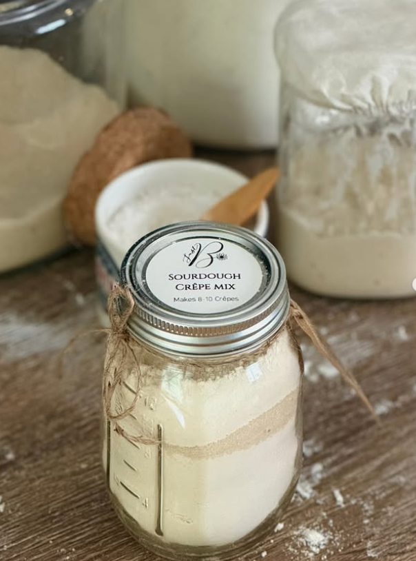

Home & Linen
Sourdough Crêpe Mix

A simple sourdough crêpe mix made with organic unbleached flour, organic dehydrated sourdough starter, organic cane sugar and salt. Each 255 g package makes 8–10 crêpes, 10 inches (25 cm) each.
Ingredients
Organic unbleached flour, organic dehydrated sourdough starter, organic cane sugar, salt.
Preparation
- Add 4 eggs to the dry mix, then add 1 tsp vanilla, ⅓ cup melted butter and 1½ cups milk.
- Use a whisk or stick blender to mix until smooth.
- Pro tip: Let rest for at least 30 min at room temperature, or refrigerate overnight for a stronger sourdough flavour.
- Pour a small amount of batter into a hot, lightly oiled pan. Cook until golden, then flip.